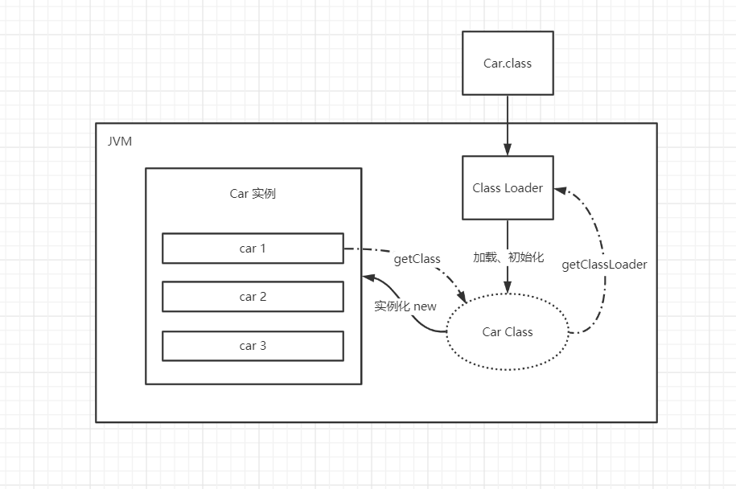
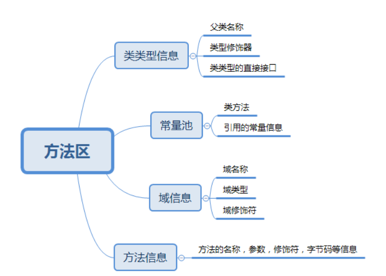

JVM
JVM探究
JVM的位置
- 运行在操作系统上的一个软件
- JRE(包含JVM) 就是Java程序的运行环境
- JVM是用C++写的
JVM体系结构

- 方法区在1.8之后就由==“元空间”==了
类加载器
作用：加载Class文件
- 对于我们所编写的一个Car对象，在编译之后会形成.class文件
- 在运行Java程序时，类加载器会首先加载和初始化这个Car类，形成一个 Car class 的抽象模板（每个类的模板只有一个）
- 这些加载器提取出来的Class对象是存放在方法区的
- 当程序中执行
Car car1 = new Car()这样的语句时 car1作为引用名存储在栈当中，而new出来的实例对象是存储在堆区的

加载器：
- 虚拟机自带的加载器
- BOOT：启动类加载器（根加载器）在rt.jar包中
- EXT：扩展类加载器 在jre/lib/ext 文件下
- APP：应用程序加载器
- 可以调用Class对象的
getClassLoader()方法去获取类加载器
双亲委派机制
- 类加载器收到加载请求
- 将这个加载请求向上委托给父类加载器完成，并一直向上委托到根加载器 (APP –> EXT –> BOOT)
- 从根加载器开始检测能否加载这个类，可以加载则使用当前的加载器；不能则抛出异常通知子加载器 (BOOT –> EXT –> APP)
安全
- “双亲委派机制”是为了保证安全所采取的机制
- 通过这样的机制，当我们自定义了一个
java.lang.String这样的类时，根加载器会优先从JRE的rt.jar包中加载这个类，而不会等到应用程序加载器来加载我们自定义的类 - 这样我们就实现了核心类库的安全性，可以防篡改
- 同样，在EXT对应的jre/lib/ext 文件下的类，也可以利用这样的“双亲委派机制”来保证类的安全性
沙箱安全机制
- 限制程序运行的环境，将Java代码限定到虚拟机特定的运行范围中。严格限制代码对本地系统资源的访问
- 对远程代码的安全性进行检查，后来引入保护域的概念
沙箱基本组件
- 字节码校验器：Java语法规范检验，帮助实现内存保护。核心类不会检验
- 类加载器：三个方面对Java沙箱起作用
- 防止恶意代码干涉善意代码（双亲委派机制）
- 守护信任类库边界
- 将代码归入保护域，限制代码可以执行的操作
Native
- 拥有native关键字的方法，是Java的作用范围达不到的操作，需要调用底层的C/C++库
- 调用native方法时，会进入本地方法栈中
- 本地方法栈会去调用本地方法接口(==JNI==)，通过JNI再调用到本地方法库
- JNI作用：扩展Java的使用，融合不同的编程语言为Java所用；JNI是公开的接口，可以自定义
But
- 企业中现在很少使用JNI，只有涉及到硬件资源的操作时才会使用
- 对于不同语言的程序间调用，采用Socket、WebServer、http…也更加方便
PC寄存器
- 线程私有
- 指向方法区中的方法字节码
方法区
- 所有线程共享的区域，所有定义的方法的信息都保存在该区域
- 静态变量、常量、类信息（静态方法、构造方法、接口定义）、运行时的常量池都存在方法区当中
- 实例变量存在堆内存中，和方法区无关

栈
- 存放8大基本类型和对象引用
- 栈不存在垃圾回收问题
堆
- 一个JVM只有一个堆内存，大小可以调节。当堆内存用完后会出现OOM错误
- 堆内存中细分三个区域
- 新生区（伊甸园、幸存0区、幸存1区）
- 老年区
- 永久区（现在堆中没有永久区了，改为使用==元空间==代替原来的功能）
- Java程序的调优，就是在“伊甸园”和“老年区”中进行垃圾回收
- 在新生区是“轻GC”，在老年区是“重GC”
新生区(Young)
- 对象诞生、成长甚至死亡的地方
- 伊甸园（Eden）：所有的对象都是在伊甸园new出来的
- 幸存者区(0,1)：在伊甸园没有被“轻GC”清理掉的对象，分（from、to）两个区域
- 经过研究，绝大部分的对象都是临时对象，在新生区就会被清理回收
老年区(Old)
- 在幸存者区没有被清理的对象会进入老年区
- 当老年区满了之后，“重GC”会对其进行内存的清理
永久区(Meta)
- 在JDK1.8之后是已经没有永久代了，已经变成了元空间
- 这个区域是常驻内存的，用来存放Java的一些运行时环境、自身携带的Class对象、interface元数据~
- 这个区域不存在垃圾回收的问题，和OOM没有关系
- 关闭JVM虚拟机才会释放这块内存
- 元空间（MetaSpace）逻辑上存在，物理上不存在
OOM错误
- 出现这种错误，首先要尝试扩大堆内存。通过为JVM传入参数来设定分配的内存大小
- 然后分析内存，使用工具查看堆中的使用情况
- 内存快照分析工具：MAT、Jprofiler
- 工具的作用
- 分析Dump内存文件，快速定位内存泄露
- 获得堆中的数据
- 获取堆中占用空间最大的对象
- ……
- JVM参数
-Xms[size]：设置初始化内存分配大小-Xmx[size]：设置最大分配内存-XX:+HeapDumpOnOutOfMemoryError：当发生堆内存溢出时，生成Dump文件-XX:+PrintGCDetails：命令行打印堆的使用情况
垃圾回收器 (GC)
- GC 的作用区域只在堆和方法区当中
GC算法
- 引用计数法
- 复制算法
- 在幸存者区中，从from到to不断复制对象
- 这种方法没有内存碎片，但是需要额外的一半空间
- 当经历了15次(默认值)复制依然没有被回收的对象会进入老年区
- 通过
-XX:MaxTenuringThreshold=[复制次数]来手动设定进入老年区的复制次数限制
- 标记压缩清除算法
- 两次扫描严重浪费时间，同时在清理时会留下内存碎片
- 通过压缩的方法移动对象的存储位置，减少内存空间的碎片浪费问题
JMM (Java Memory Model)
本博客所有文章除特别声明外，均采用 CC BY-SA 4.0 协议 ，转载请注明出处！